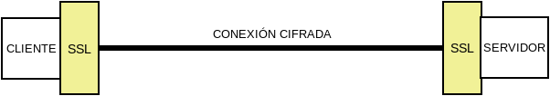

9.1.3.4. Protocolos seguros de red¶
Para la comunicación segura entre extremos se han desarrollado distintos protocolos que recurren al cifrado híbrido. Todos los protocolos modernos incluyen la seguridad en su diseño, pero para asegurar antiguos carentes de ella, nació SSL que es tan sólo un protocolo que permite crear un canal seguro sobre el que puedan actuar protocolos inseguros.
9.1.3.4.1. SSL/TLS¶
En realidad son el mismo protocolo, ya que TLS es el sucesor de SSL, aunque es común que se le siga denominando SSL. Básicamente es un protocolo que permite encapsular de modo seguro otro protocolo de red. Surgió en 1994 para encapsular el protocolo HTTP (y crear HTTPs) en los navegadores Netscape.
SSL es independiente del protocolo no seguro que cifre y, simplemente, establece un encapsulamiento cifrado bajo el cual circula el protocolo plano sin modificaciones. Su funcionamiento básicamente es el siguiente:
Los extremos establecen la conexión segura intercambiando las claves según lo explicado en el cifrado híbrido, de manera que cuando la clave simétrica se encuentra en ambos extremos, el túnel está listo para funcionar.
En el cliente, la comunicación en el protocolo arbitrario se cifra gracias a SSL y se envía al servidor donde el protocolo SSL se encarga de descifrar y entregar la comunicación en claro al servidor.
La respuesta del servidor se cifra, se envía a través de la red, y al llegar al cliente, se descifra y se entrega al cliente.
Podemos pues considerar al protocolo SSL como un mero intérprete que se encarga de cifrar la comunicación al salir y descifrarla al entrar.
Por tanto, servidor y cliente siguen comunicándose a través del mismo protocolo en claro. Lo que suele ocurrir, no obstante, es que ambos, servidor y cliente, lleven incorporada la capacidad de cifrar con SSL. Por ejemplo, en una comunicación HTTPs, que no es más que HTTP sobre SSL, se comunican directamente navegador con servidor web, porque son ellos dos mismos lo que también cifran y descifran. Sin embargo, esto no tiene por qué ser así. Es bastante común el siguiente esquema:

en el que no es el servidor web el que cifra usando el protocolo SSL, sino un proxy web intermedio. Este proxy web inverso, se encuentra en la misma máquina que el servidor o en una máquina de la misma red, por lo que no se compromete la seguridad y facilita que se pueda colocar entre él y el servidor web, un proxy de cacheo como varnish que, con una buena política, permite agilizar el servicio de páginas dinámicas.
SSL usa certificados digitales X.509. que, además, de contribuir al cifrado, permiten al cliente confirmar la identidad del servidor.
Ver también
Consulte cómo obtener un certificado de servidor válido con Let’s Encrypt.
9.1.3.4.1.1. SNI¶
Al cifrar TLS por completo el protocolo subyacente, es preciso que opere el certificado antes de poder acceder a cualquier información de capa de aplicación. Esto supone un problema cuando un servidor maneja varios certificados, cada uno asociado a un nombre de máquina, y se precisa conocer de antemano qué nombre ha utilizado el cliente al hacer la petición para que el servidor utilice el certificado correspondiente. En este caso, no hay modo de saber el nombre sin descifrar y no se puede descifrar hasta no conocer cuál es el nombre de máquina.
Para sortear este inconveniente se creó la extensión SNI, que permite incluir sin cifrar el nombre de la máquina a la que se conecta el cliente, de modo que el servidor pueda escoger el certificado adecuado. Todos los navegadores modernos soportan esta extensión.
9.1.3.4.1.2. STARTTLS¶
El uso de SSL tiene, sin embargo, un inconveniente: al tener que establecerse previamente el túnel seguro, dentro del cual circula el protocolo en claro, es necesario utilizar un puerto distinto de escucha, ya que o se escucha para establecer una comunicación con el protocolo en claro o se escucha para establecer un canal seguro. Esa es la razón por la que los servidores web escuchan habitualmente en el puerto 80 (HTTP) y en el puerto 443 (HTTPs).
Puerto original |
Puerto seguro |
Propósito |
|---|---|---|
SMTP/25 |
SMTPS/465 |
Envío de correo electrónico. |
HTTP/80 |
HTTPS/443 |
Servicio web. |
POP3/110 |
POP3S/995 |
Buzón de correo electrónico. |
IMAP/143 |
IMAPS/993 |
Buzón de correo electrónico. |
LDAP/389 |
LDAPS/636 |
Servicio de directorio. |
Para evitarlo, se ideó STARTTLS que es una extensión para los protocolos en claro (SMTP, IMAP, LDAP, etc.) que permite negociar el cifrado, de manera que servidor y cliente establecen comunicación con el protocolo correspondiente y negocian para que la comunicación pase a cifrarse con SSL. Gracias a ello, no es necesario ocupar dos puertos distintos y la comunicación, segura o no, puede realizarse siempre por el puerto tradicional. No obstante:
A diferencia de lo que ocurre en el resto de protocolos, en la comunicación web, sigue sin usarse STARTTLS. En los demás, se ha ido abandonando el uso del protocolo seguro por la negociación del cifrado.
En el protocolo SMTP suelen usarse dos puertos: el 25 para comunicación entre servidores, por lo general, sin autenticación; y el 587 para comunicación con autenticación cliente-servidor. En cualquier caso, nada tiene que ver esto con el cifrado, puesto que en ambos puertos se suele habilitar la negociación del cifrado mediante STARTTLS.
9.1.3.4.1.3. Pruebas prácticas¶
Por hacer
Reformar esto para usar openssL s_server. stunnel debería dejarse para la sección de proxies e incluir aquí simplemente una referencia.
Es posible ilustrar cómo funciona el protocolo SSL en servidores con algunas órdenes sencillas. Por ejemplo, para comunicarnos sin cifrado a un servidor que usa un protocolo en claro, podemos usar, simplemente, telnet:
$ telnet smtp.gmail.com 587
Trying 108.177.15.108...
Connected to gmail-smtp-msa.l.google.com.
Escape character is '^]'.
220 smtp.gmail.com ESMTP r12sm6291342wrq.3 - gsmtp
EHLO localhost
250-smtp.gmail.com at your service, [81.0.56.71]
250-SIZE 35882577
250-8BITMIME
250-STARTTLS
250-ENHANCEDSTATUSCODES
250-PIPELINING
250-CHUNKING
250 SMTPUTF8
QUIT
221 2.0.0 closing connection r12sm6291342wrq.3 - gsmtp
Connection closed by foreign host.
Si queremos conectarnos usando SSL para que previamente se establezca el canal seguro, podemos usar openssl:
$ openssl s_client -connect smtp.gmail.com:465 -quiet
depth=2 OU = GlobalSign Root CA - R2, O = GlobalSign, CN = GlobalSign
verify return:1
depth=1 C = US, O = Google Trust Services, CN = Google Internet Authority G3
verify return:1
depth=0 C = US, ST = California, L = Mountain View, O = Google LLC, CN =
smtp.gmail.com
verify return:1
220 smtp.gmail.com ESMTP h16sm24225437wrb.62 - gsmtp
EHLO localhost
250-smtp.gmail.com at your service, [81.0.56.71]
250-SIZE 35882577
250-8BITMIME
250-AUTH LOGIN PLAIN XOAUTH2 PLAIN-CLIENTTOKEN OAUTHBEARER XOAUTH
250-ENHANCEDSTATUSCODES
250-PIPELINING
250-CHUNKING
250 SMTPUTF8
QUIT
221 2.0.0 closing connection h16sm24225437wrb.62 - gsmtp
read:errno=0
Nota
Para incluir SNI en la petición de openssl puede añadirse la opción -servername smtp.gmail.com.
Si, por el contrario, queremos negociar el establecimiento del cifrado con STARTTLS, podemos usar también openssl indicándole que use STARTTLS:
$ openssl s_client -connect smtp.gmail.com:587 -starttls smtp -quiet
depth=2 OU = GlobalSign Root CA - R2, O = GlobalSign, CN = GlobalSign
verify return:1
depth=1 C = US, O = Google Trust Services, CN = Google Internet Authority G3
verify return:1
depth=0 C = US, ST = California, L = Mountain View, O = Google LLC, CN =
smtp.gmail.com
verify return:1
250 SMTPUTF8
EHLO localhost
250-smtp.gmail.com at your service, [81.0.56.71]
250-SIZE 35882577
250-8BITMIME
250-AUTH LOGIN PLAIN XOAUTH2 PLAIN-CLIENTTOKEN OAUTHBEARER XOAUTH
250-ENHANCEDSTATUSCODES
250-PIPELINING
250-CHUNKING
250 SMTPUTF8
QUIT
221 2.0.0 closing connection 200sm9064552wmw.31 - gsmtp
read:errno=0
stunnel
Podemos ilustrar cómo SSL cifra con independencia del protocolo en claro, utilizando el proxy stunnel y netcat. Es obvio que sí hacemos en una máquina servidor:
$ nc -l -p 12345
y en otra cliente:
$ telnet servidor 12345
podremos establecer un diálogo entre ambas máquinas. El diálogo viajará absolutamente en claro:

Pero podemos interponer stunnel para que se encargue de cifrar la comunicación en ambos extremos:

De esta forma, el cliente se comunica con la parte cliente de stunnel, éste con su parte servidor y, finalmente, esta parte servidor con el netcat servidor.
Como en el servidor necesitaremos un certificado, debemos instalar:
# apt install stunnel4 ssl-cert
y lo usamos para crear un certificado autofirmado:
# make-ssl-cert /usr/share/ssl-cert/ssleay.cnf /etc/stunnel/stunnel.pem
Hecho lo cual, podemos crear esta configuración dentro de
/etc/stunnel/nc.conf (el nombre es irrelevante: basta con su extensión
sea .conf):
[netcat-ssl]
cert = /etc/stunnel/stunnel.pem
accept = IP.DEL.SERVIDOR:12345
connect = 127.0.0.1:12345
De esta forma, stunnel acepta datos cifrados en el puerto 12345 de la interfaz real, los descifra y los entrega en claro en el mismo puerto de la interfaz de loopback. En el sentido inverso, recibe datos en claro procedentes de esta interfaz y los cifra antes de enviarlos al cliente.
Nota
En Stretch es necesario también habilitar explícitamente el
servicio editando el fichero /etc/default/stunnel4:
ENABLED=1
Hecha la configuración, podemos reiniciar el servicio:
# invoke-rc.d stunnel4 restart
Además debemos ejecutar netcat, haciendo que escuche únicamente en la interfaz de loopback:
# nc -l -p 12345 -s 127.0.0.1
En el cliente debemos también instalar stunnel y arrancarlo con esta configuración:
[netcat-ssl]
client = yes
accept = 127.0.0.1:12345
connect = IP.DEL.SERVIDOR:12345
Finalmente, para comunicarnos de modo seguro con el netcat servidor, conectamos telnet al stunnel cliente:
# telnet localhost 12345
Nota
En este caso, en que simplemente establecemos una sesión cruda con el servidor, podríamos habernos ahorrado la instalación de stunnel en el cliente y haber usado openssl, que es capaz de hacer el proceso de cifrado, además de habilitar la conversación cruda:
# openssl s_client -connect IP.DEL.SERVIDOR:12345 -quiet
Advertencia
Aunque la comunicación se lleva a cabo perfectamente, hay, sin embargo, una muy grande diferencia respecto a cuando hicimos la conexión directa (y sin cifrar): el netcat servidor siempre conecta con el stunnel local con lo que para él todas las conexiones son locales y desconoce por completo cuál es la IP del cliente con el que se está comunicando. En el cliente ocurre otro tanto, aunque en este caso es menos importante y, además, podemos usar openssl que sí conecta directamente con la máquina servidor. Para paliar esto, stunnel debería ejecutarse como un proxy transparente.
9.1.3.4.2. SSH¶
Surgió como reemplazo al protocolo telnet que se usaba para la administración remota de servidores. Sin embargo, no se limita a esto y es capaz de ofrecer otros servicios seguros como la transferencia de ficheros o la tunelización de otras comunicaciones (funcionalidad esta análoga a la que ofrece SSL).
Utiliza certificados con formato propio para implementar el cifrado híbrido, no los certificados digitales X.509.
Ver también
Hay todo un epígrafe dedicado a la configuración de un servicio SSH.
Por hacer
En esta página se explica cómo usar certificados SSH en vez de simplemente claves públicas y privadas. Debería desarrollarse la explicación en el epígrafe dedicado a este servicio y aquí hacer una referencia explícita.
9.1.3.4.3. VPN¶
No es propiamente un protocolo, sino una red privada virtual, esto es una tecnología de comunicación entre redes de ordenadores que permite, a través de una red pública (internet), la conexión segura punto a punto entre dos redes locales de ordenadores. Esta conexión puede ser efectuada en capa 3, en cuyo caso las dos redes extremas serán redes distintas; o en capa 2, en cuyo caso el enlace conectará las dos redes extremas como dos segmentos de una misma red.
Para establecer una VPN no hay un único protocolo, sino toda pléyade de protocolos que se pueden agrupar en cuatro familias: el obsoleto PPTP, las que usan IPSec, los que usan SSL y otros que se basan en Noise.
Ver también
Hay un extenso epígrafe dedicado a este tipo de protocolos.